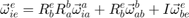
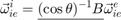
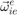

GNC midterm
Keshuai Xu
Contents
Problem 1
1. ??? 2. True 3. True 4. False 5. False 6.
Problem 2
Variable naming conventions: R_subscript_superscript x_d is dx/dt. x_dd is d(x_d)/dt.
clear variables syms psi theta phi psi_d theta_d phi_d real
2.1
% x rotation psi R_i_a = [1 0 0; 0 cos(psi) sin(psi); 0 -sin(psi) cos(psi)] % y rotation theta R_a_b = [cos(theta) 0 -sin(theta); 0 1 0; sin(theta) 0 cos(theta)] % z rotation phi R_b_e = [cos(phi) sin(phi) 0; -sin(phi) cos(phi) 0; 0 0 1]
R_i_a = [ 1, 0, 0] [ 0, cos(psi), sin(psi)] [ 0, -sin(psi), cos(psi)] R_a_b = [ cos(theta), 0, -sin(theta)] [ 0, 1, 0] [ sin(theta), 0, cos(theta)] R_b_e = [ cos(phi), sin(phi), 0] [ -sin(phi), cos(phi), 0] [ 0, 0, 1]
2.2
R_i_e = R_b_e * R_a_b * R_i_a
R_i_e = [ cos(phi)*cos(theta), cos(psi)*sin(phi) + cos(phi)*sin(psi)*sin(theta), sin(phi)*sin(psi) - cos(phi)*cos(psi)*sin(theta)] [ -cos(theta)*sin(phi), cos(phi)*cos(psi) - sin(phi)*sin(psi)*sin(theta), cos(phi)*sin(psi) + cos(psi)*sin(phi)*sin(theta)] [ sin(theta), -cos(theta)*sin(psi), cos(psi)*cos(theta)]
2.3

2.4
omega_ia_a = [psi_d 0 0]' omega_ab_b = [0 theta_d 0]' omega_be_e = [0 0 phi_d]'
omega_ia_a =
psi_d
0
0
omega_ab_b =
0
theta_d
0
omega_be_e =
0
0
phi_d
2.5
omega_ie_e = R_b_e * R_a_b * omega_ia_a + R_b_e * omega_ab_b + omega_be_e
% ANSWER - the part to fill in the blank
H_123_e = [cos(phi)*cos(theta) sin(phi) 0;
-cos(theta)*sin(phi) cos(phi) 0;
sin(theta) 0 1]
omega_ie_e =
theta_d*sin(phi) + psi_d*cos(phi)*cos(theta)
theta_d*cos(phi) - psi_d*cos(theta)*sin(phi)
phi_d + psi_d*sin(theta)
H_123_e =
[ cos(phi)*cos(theta), sin(phi), 0]
[ -cos(theta)*sin(phi), cos(phi), 0]
[ sin(theta), 0, 1]
2.6
ANSWER - the part to fill in the blank

% intermediate step and verify 2.5 omega_ie_i = H_123_e \ omega_ie_e % the whole thing omega_ie_i_left = simplify(inv(H_123_e)) % B part of the answer B = simplify(omega_ie_i_left * cos(theta))
omega_ie_i = psi_d theta_d phi_d omega_ie_i_left = [ cos(phi)/cos(theta), -sin(phi)/cos(theta), 0] [ sin(phi), cos(phi), 0] [ -(cos(phi)*sin(theta))/cos(theta), (sin(phi)*sin(theta))/cos(theta), 1] B = [ cos(phi), -sin(phi), 0] [ cos(theta)*sin(phi), cos(phi)*cos(theta), 0] [ -cos(phi)*sin(theta), sin(phi)*sin(theta), cos(theta)]
2.7
quantity measured by gyro: $ euler321_kinematics =